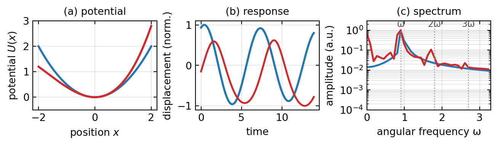

In the preceding lectures, we treated light-matter interactions assuming a linear regime: the optical response of the material (polarization \(\mathbf{P}\)) is proportional to the applied electric field \(\mathbf{E}\):
\[\mathbf{P} = \epsilon_0 \chi^{(1)} \mathbf{E}\]
where \(\chi^{(1)}\) is the linear susceptibility. This assumption is excellent for most everyday optical phenomena—weak illumination from lamps, sunlight passing through windows, etc.
However, nonlinear optical effects become important when:
High intensities: With modern lasers, we can achieve electric field strengths comparable to atomic electric fields (\(\sim 10^9\) V/m). At these intensities, the electron oscillation amplitude becomes significant compared to atomic dimensions.
Resonant enhancement: Near material resonances, even modest intensities can produce strong nonlinear effects.
Why Nonlinear Optics Matters
Consider a few examples:
Frequency conversion: Many lasers (especially ultraviolet or infrared) are created by frequency doubling or mixing visible lasers through nonlinear processes.
Ultrafast photonics: Generation and characterization of femtosecond pulses relies crucially on nonlinear effects.
Nonlinear microscopy: Multiphoton microscopy (like second-harmonic generation microscopy) enables deep tissue imaging with reduced phototoxicity.
Quantum optics: Generation of entangled photons, squeezed light, and other quantum states requires nonlinear interactions.
The key insight is that intensity-dependent material properties open entirely new possibilities for light-matter manipulation.
The Anharmonic Oscillator Model
To understand where nonlinear polarization comes from, let’s start with a classical model of a bound electron in a material.
Linear Oscillator (Review)
In the linear regime, we model an electron bound to an atom by a harmonic potential:
\[m\ddot{x} + m\gamma\dot{x} + m\omega_0^2 x = -eE(t)\]
where: - \(m\) is the electron mass - \(\gamma\) is the damping rate - \(\omega_0\) is the resonance frequency - \(E(t)\) is the applied field - \(-e\) is the electron charge
The dipole moment is \(p = -ex\), and the bulk polarization is \(P = Np = -Nex\) (for \(N\) electrons per unit volume).
Nonlinear: Adding Anharmonic Terms
In reality, the potential is not perfectly quadratic. For large oscillation amplitudes, higher-order terms become important:
where \(x_1\) is the fundamental frequency component and \(x_2\) is the second harmonic.
Deriving the Second-Order Response
Substituting the series expansion into the equation of motion and collecting terms:
At frequency \(\omega\) (keeping leading-order terms): \[-m\omega^2 x_1 + m\omega_0^2 x_1 = -eE_0\]
This gives the linear response: \[x_1 = \frac{eE_0}{m(\omega_0^2 - \omega^2 - i\gamma\omega)}\]
At frequency \(2\omega\) (from the \(x_1^2\) term in the cubic nonlinearity): The \(3ax_1^2 \cos^2(\omega t)\) term contains a \(\cos(2\omega t)\) component. After some algebra:
\(\chi^{(1)}\): Linear susceptibility. Second-rank tensor; depends on frequency.
\(\chi^{(2)}\): Second-order susceptibility. Third-rank tensor. Vanishes in centrosymmetric materials (by symmetry). Responsible for second-harmonic generation (SHG), sum/difference frequency generation, etc.
\(\chi^{(3)}\): Third-order susceptibility. Fourth-rank tensor. Present in all materials (including centrosymmetric ones). Responsible for Kerr effect, self-phase modulation, third-harmonic generation, four-wave mixing, etc.
Second-harmonic generation is the most basic \(\chi^{(2)}\) process: two photons of frequency \(\omega\) combine to produce one photon at frequency \(2\omega\).
In the classical picture, a sinusoidal field \(E(t) = E_0 \cos(\omega t)\) induces a nonlinear polarization:
The Problem: In a normal dispersive medium, \(n(2\omega) > n(\omega)\), so this condition is never satisfied! The second harmonic and fundamental wave get out of phase as they propagate, and the energy transfer is inefficient.
Angle Tuning: Birefringence to the Rescue
In an anisotropic (birefringent) crystal, different polarizations have different refractive indices. We can use this:
The fundamental wave (frequency \(\omega\)) has refractive index \(n_o(\omega)\) (ordinary ray).
The second harmonic (frequency \(2\omega\)) has refractive index \(n_e(2\omega)\) (extraordinary ray), which depends on the angle \(\theta\) inside the crystal.
By choosing the right angle \(\theta_m\) (the phase-matching angle), we can satisfy:
\[2 n_o(\omega) = n_e(2\omega, \theta_m)\]
This is called angle-tuned phase matching or critical angle phase matching.
SHG Conversion Efficiency
When phase matching is satisfied (\(\Delta k = 0\)), the second-harmonic amplitude grows linearly with crystal length:
\[I_{2\omega} \propto L^2\]
When phase matching is imperfect (\(\Delta k \neq 0\)), the efficiency is reduced by a factor:
\[\eta(\Delta k) \propto \operatorname{sinc}^2\left(\frac{\Delta k \cdot L}{2}\right)\]
where \(\Delta k = 2k_\omega - k_{2\omega}\).
The coherence length is defined as:
\[L_c = \frac{\pi}{|\Delta k|}\]
Over a coherence length, the second harmonic and fundamental go through one full cycle of constructive and destructive interference. For efficient conversion, we need the crystal length \(L\) to be comparable to or much smaller than many coherence lengths.
Sum and Difference Frequency Generation
More generally, \(\chi^{(2)}\) processes can combine waves at different frequencies:
Sum frequency generation (SFG):\[\omega_3 = \omega_1 + \omega_2\]
with phase-matching condition: \[\mathbf{k}_3 = \mathbf{k}_1 + \mathbf{k}_2\]
Difference frequency generation (DFG):\[\omega_3 = \omega_1 - \omega_2\]
with phase-matching condition: \[\mathbf{k}_3 = \mathbf{k}_1 - \mathbf{k}_2\]
These are used extensively for generating light at wavelengths not accessible by direct lasers (e.g., infrared).
Optical Parametric Amplification and Oscillation
In a reverse process, a single photon at frequency \(\omega_p\) (pump) can split into two lower-frequency photons at \(\omega_s\) and \(\omega_i\) (signal and idler):
\[\omega_p = \omega_s + \omega_i\]
with phase matching: \[\mathbf{k}_p = \mathbf{k}_s + \mathbf{k}_i\]
If even a tiny amount of signal photons are present, the nonlinear crystal will amplify them—this is optical parametric amplification (OPA). If the signal is seeded by quantum vacuum fluctuations, it’s called parametric down-conversion.
If the nonlinear crystal is placed inside an optical cavity, we get optical parametric oscillation (OPO), which generates coherent light at frequencies determined by phase matching.
Third-Order Nonlinear Effects (\(\chi^{(3)}\))
The Kerr Effect: Intensity-Dependent Refractive Index
One of the most important \(\chi^{(3)}\) effects is the optical Kerr effect: the refractive index depends on the intensity of light propagating through the material.
\[n(I) = n_0 + n_2 I \tag{3}\]
where: - \(n_0\) is the linear refractive index - \(n_2\) is the nonlinear refractive index (related to \(\chi^{(3)}\)) - \(I\) is the intensity
The nonlinear contribution to the refractive index arises from the \(\chi^{(3)}\) term in the polarization. When a strong optical field is present, it creates an intensity-dependent polarization that shifts the phase velocity.
Physical Origin of the Kerr Effect
The Kerr effect can be understood classically from the anharmonic oscillator model. The \(x^3\) and \(x^4\) terms in the potential lead to intensity-dependent oscillation frequencies, which manifest as an intensity-dependent refractive index.
In many materials, \(n_2 > 0\) (normal Kerr effect), leading to self-focusing: intense regions of the beam see a higher refractive index and act like a lens, further confining the light.
In other materials (especially near resonances), \(n_2 < 0\), leading to self-defocusing.
Self-Phase Modulation (SPM)
As an intense optical pulse propagates through a medium with the Kerr effect, the leading edge sees a higher refractive index (due to the pulse itself), causing the phase to shift.
For a pulse with envelope \(A(z, t)\) and intensity profile \(I(t)\):
where \(\gamma\) is a coefficient related to the geometry. The intensity of the pulse creates a time-dependent phase shift:
\[\phi_{\text{NL}}(t) = n_2 \omega_0 L I(t) / c\]
where \(L\) is the propagation distance. This results in a frequency chirp: the instantaneous frequency becomes time-dependent.
At the leading edge of a pulse, the chirp is toward lower frequencies (red-shift); at the trailing edge, toward higher frequencies (blue-shift). This frequency broadening can be used in combination with dispersion to generate broad-bandwidth pulses (as in nonlinear fiber optics).
Four-Wave Mixing (FWM)
When three waves at frequencies \(\omega_1, \omega_2, \omega_3\) propagate together in a \(\chi^{(3)}\) medium, a fourth wave is generated at:
\[\omega_4 = \omega_1 + \omega_2 - \omega_3\]
with phase-matching condition: \[\mathbf{k}_4 = \mathbf{k}_1 + \mathbf{k}_2 - \mathbf{k}_3\]
FWM is particularly important in fiber-optic communications, where it can both generate new channels and cause crosstalk between existing channels. By engineering the dispersion and power levels, FWM can be used constructively to generate broadband light or new frequencies.
Third-Harmonic Generation (THG)
Three photons at frequency \(\omega\) combine to produce one photon at \(3\omega\):
Unlike SHG, which requires \(\chi^{(2)}\) (and vanishes in centrosymmetric media), THG occurs in all materials via \(\chi^{(3)}\).
However, THG efficiency is much lower than SHG—it scales as the cube of the field amplitude rather than the square. Also, phase matching is typically more difficult.
Visualizing Anharmonic Oscillations
Let’s generate some numerical solutions to visualize the anharmonic oscillator response.
Code
from scipy.integrate import odeintfrom scipy.fft import fft, fftfreqm, omega0, gamma, a =1.0, 1.0, 0.1, 0.1E0_lin, E0_nl =0.1, 0.2omega_drive =0.9*omega0t = np.linspace(0, 20*np.pi/omega_drive, 2000)fig, axes = plt.subplots(1, 3, figsize=get_size(17, 4.8), layout='constrained')# (a) potentialsxr = np.linspace(-2, 2, 300)axes[0].plot(xr, 0.5*m*omega0**2*xr**2, color='C0', lw=2)axes[0].plot(xr, 0.5*m*omega0**2*xr**2+ a*xr**3, color='C3', lw=2)axes[0].set_xlabel('position $x$'); axes[0].set_ylabel('potential $U(x)$')axes[0].set_ylim(-0.5, 3); axes[0].grid(True, alpha=0.3)axes[0].set_title('(a) potential', fontsize=10)# (b) time response: linear vs anharmonic, each normalized to its own peakdef osc(state, t, E0, nl): x, v = statereturn [v, -gamma*v - omega0**2*x - nl*3*a*x**2+ (E0/m)*np.cos(omega_drive*t)]x_lin = odeint(osc, [0, 0], t, args=(E0_lin, 0))[:, 0]x_nl = odeint(osc, [0, 0], t, args=(E0_nl, 1))[:, 0]win =slice(1000, 1400) # steady-state window, after the transient has decayedtw = t[win] - t[win][0]axes[1].plot(tw, x_lin[win]/np.abs(x_lin[win]).max(), color='C0', lw=2)axes[1].plot(tw, x_nl[win]/np.abs(x_nl[win]).max(), color='C3', lw=1.8)axes[1].set_xlabel('time'); axes[1].set_ylabel('displacement (norm.)')axes[1].grid(True, alpha=0.3); axes[1].set_title('(b) response', fontsize=10)# (c) spectra on an angular-frequency axis (FFT gives ordinary frequency, so multiply by 2π)half =len(t)//2omega_axis =2*np.pi*fftfreq(len(t), t[1]-t[0])[:half]def spec(x): s = np.abs(fft(x)[:half]);return s/s.max()sel = (omega_axis >=0) & (omega_axis <=3.3)axes[2].semilogy(omega_axis[sel], spec(x_lin)[sel], color='C0', lw=1.8)axes[2].semilogy(omega_axis[sel], spec(x_nl)[sel], color='C3', lw=1.8)for f, lab in [(omega_drive, 'ω'), (2*omega_drive, '2ω'), (3*omega_drive, '3ω')]: axes[2].axvline(f, color='0.6', ls=':', lw=1) axes[2].text(f, 1.5, lab, ha='center', fontsize=9, color='0.35')axes[2].set_xlabel('angular frequency ω'); axes[2].set_ylabel('amplitude (a.u.)')axes[2].set_xlim(0, 3.3); axes[2].set_ylim(1e-4, 3)axes[2].grid(True, alpha=0.3, which='both'); axes[2].set_title('(c) spectrum', fontsize=10)plt.savefig('img/anharmonic_oscillator.png', dpi=150, bbox_inches='tight')plt.show()

Figure 1— From a linear to a nonlinear oscillator. (a) Potentials: the harmonic well (blue) and the anharmonic well with an added cubic term (red), which is no longer symmetric. (b) Time-domain response to a sinusoidal drive, each curve normalized to its own peak: the linear oscillator (blue) follows a clean sinusoid at the drive frequency, while the anharmonic oscillator (red) is visibly distorted. (c) Amplitude spectra on a logarithmic scale: the linear response (blue) has a single peak at the drive frequency ω, whereas the anharmonic response (red) also generates 2ω and a weaker 3ω (dotted lines), the mechanical analog of optical harmonic generation.
Figure 1 shows the evolution from a linear to a nonlinear oscillator. Panel (a) illustrates how the cubic anharmonic term breaks the symmetry of the potential. Panel (b) compares the time-domain response of both oscillators after normalizing each to its own peak: the linear oscillator stays a clean sinusoid at the drive frequency, while the anharmonic one is distorted. Panel (c) reveals that this distortion corresponds to new spectral components, with the anharmonic oscillator generating a second harmonic at \(2\omega\) and a weaker third harmonic at \(3\omega\), both absent in the linear case.
Phase Matching and SHG Efficiency
Now let’s visualize the critical role of phase matching in second-harmonic generation.
Figure 2— Phase matching in second-harmonic generation. (a) Second-harmonic intensity along the crystal, each curve normalized to its own peak: with phase matching (green, Δk = 0) the intensity grows monotonically as \(z^2\), while with a phase mismatch (red) it oscillates and returns to zero after every coherence length \(L_c\) (dotted line), so no net energy accumulates. (b) Conversion efficiency \(\mathrm{sinc}^2(\Delta k\, L/2)\) versus phase mismatch for a crystal of length \(L = 1\); the dotted lines at \(\Delta k = \pm\pi/L\) mark the edges of the central acceptance peak.
Figure 2 demonstrates the importance of phase matching in SHG. Panel (a) shows that when phase matching is satisfied, the second-harmonic field grows monotonically with crystal length. Without phase matching, the second harmonic and fundamental wave periodically go in and out of phase, limiting energy transfer. Panel (b) shows the classic \(\mathrm{sinc}^2\) dependence of efficiency on phase mismatch, with a narrow acceptance bandwidth around \(\Delta k = 0\).
SHG Conversion Efficiency as a Function of Crystal Parameters
Figure 3— SHG efficiency and crystal parameters. (a) At perfect phase matching the conversion efficiency grows quadratically with crystal length in the weak-pump limit (\(\eta\propto L^2\), arrow) before saturating once the pump becomes depleted. (b) The \(\mathrm{sinc}^2\) acceptance curves for crystal lengths \(L = 0.5,\,1,\,2,\,4\) (each labeled on its own curve, dark to light): the longer the crystal, the higher the peak efficiency but the narrower the acceptance band in phase mismatch, angle, and wavelength.
Figure 3 shows two critical aspects of SHG performance. Panel (a) demonstrates that at perfect phase matching (\(\Delta k = 0\)), the conversion efficiency increases quadratically with crystal length for weak signals (weak pump limit). This is why longer crystals are generally preferred. Panel (b) illustrates the acceptance bandwidth: longer crystals have narrower angular and wavelength acceptance ranges, requiring tighter phase-matching control but offering higher efficiency when conditions are right.
Figure 4— Optical Kerr effect and self-phase modulation. (a) Intensity-dependent refractive index \(n(I)=n_0+n_2 I\): the linear case (black, \(n_2=0\)), self-focusing for \(n_2>0\) (blue, the index rises with intensity) and self-defocusing for \(n_2<0\) (red). (b) Self-phase modulation of a Gaussian pulse: the intensity profile \(I(t)\) (green) imprints a nonlinear phase \(\phi_{NL}(t)\) (blue, left axis) of the same shape, whose time derivative gives the instantaneous-frequency chirp (red dashed, right axis): the leading edge is red-shifted and the trailing edge blue-shifted.
Figure 4 illustrates the Kerr effect and its consequences. Panel (a) shows how the refractive index varies with intensity. For normal Kerr effect (\(n_2 > 0\)), intense regions experience a higher \(n\), which acts like a focusing element. Panel (b) demonstrates self-phase modulation: as a pulse propagates, the intense center of the pulse acquires more phase than the weak edges. This creates a frequency chirp: the leading edge is red-shifted, the trailing edge is blue-shifted. This mechanism is fundamental to nonlinear pulse compression techniques.
Applications of Nonlinear Optics
Frequency Conversion and Wavelength Extension
Most ultraviolet and deep-infrared lasers are created through nonlinear frequency conversion:
UV generation: Second-harmonic generation of Nd:YAG (\(\lambda = 1064\) nm) produces 532 nm. Further SHG yields 266 nm in the UV.
IR generation: Difference-frequency generation or OPA seeded with a broadband continuum can produce tunable IR light.
Nonlinear effects are essential for generating and manipulating ultrafast pulses:
Kerr lens mode-locking: In solid-state lasers, the Kerr effect creates an intensity-dependent lens that preferentially supports short pulses.
Soliton propagation: In fibers with appropriate dispersion and nonlinearity, pulses can propagate as solitons—stable, non-dispersive structures. Self-phase modulation is balanced by dispersion.
Supercontinuum generation: In a short nonlinear fiber, a short pulse undergoes self-phase modulation, four-wave mixing, and other nonlinear effects, generating a broadband supercontinuum spectrum spanning octaves.
Nonlinear Microscopy: Two-Photon and SHG Imaging
Two-photon excited fluorescence (TPEF) and second-harmonic generation (SHG) microscopy enable deep-tissue imaging with reduced phototoxicity:
Nonlinear absorption: Fluorophores absorb two infrared photons simultaneously, creating a virtual transition to an excited state. The nonlinear dependence on intensity ensures that fluorescence is generated primarily at the focal point, providing inherent optical sectioning.
SHG imaging: Collagen and other fibrous proteins exhibit strong second-harmonic signals. SHG microscopy visualizes these structures without fluorophore labeling. The second harmonic is generated at the focus, providing excellent spatial resolution.
Both techniques allow imaging at depths of 500–1000 μm in tissue, compared to ~100 μm for linear confocal microscopy.
Summary
The transition from linear to nonlinear optics opens a vast landscape of new phenomena and applications:
Key takeaways:
Nonlinear polarization arises from the anharmonic motion of electrons at high field strengths. The polarization expansion in powers of \(\mathbf{E}\) reveals second-order (\(\chi^{(2)}\)) and third-order (\(\chi^{(3)}\)) susceptibilities.
\(\chi^{(2)}\) effects (SHG, SFG, DFG, OPA/OPO) require momentum conservation via phase matching. Angle tuning in birefringent crystals enables efficient frequency conversion.
\(\chi^{(3)}\) effects (Kerr effect, SPM, FWM, THG) occur in all materials and are responsible for intensity-dependent refractive index, nonlinear pulse shaping, and broadband generation.
Engineering the nonlinear response through crystal design, phase matching, and dispersion engineering enables control of light properties inaccessible in the linear regime.
Practical applications span frequency conversion, ultrafast photonics, quantum optics, and nonlinear imaging—all technologies that have become indispensable in modern science and technology.
Exercises for Independent Study
Phase matching in KDP: Potassium dihydrogen phosphate (KDP) has \(n_o(\omega) = 1.500\) and \(n_e(2\omega) = 1.440\). Calculate the critical angle \(\theta_c\) for type-I phase matching of SHG at \(\lambda = 1.064\) μm. (Hint: \(n_e(\theta) = [(\cos^2\theta/n_e^2 + \sin^2\theta/n_o^2)]^{-1/2}\))
Kerr effect and self-focusing: A 100-fs pulse with peak intensity \(I_0 = 10^{14}\) W/m² propagates in a glass fiber with \(n_2 = 2.7 \times 10^{-20}\) m²/W. Calculate the nonlinear phase shift over 1 cm of propagation. (Assume \(\hbar\omega \approx 2\) eV for 1 μm light, and work in SI units.)
Parametric amplification: An OPA is pumped at 266 nm. The signal is seeded at 800 nm. Calculate the wavelength of the idler wave. In what spectral region does it lie?
Harmonic content in a nonlinear crystal: Derive the expression for the second-harmonic amplitude \(A_{2\omega}\) as a function of the fundamental amplitude \(A_\omega\) and crystal length \(L\), assuming perfect phase matching. How does the power grow compared to the linear case?
Experimental Connections
Nonlinear optical effects require intense light fields but can be demonstrated with modest equipment:
Second harmonic generation with a green laser pointer Many “green” laser pointers are actually IR lasers (Nd:YAG at 1064 nm) with a KTP doubling crystal inside. Open a broken pointer (safely!) to see the crystal. With a spectrometer, you can verify both the 1064 nm fundamental and 532 nm second harmonic. This is SHG in action at milliwatt power levels.
Kerr effect in optical fibers Send a pulsed laser into a single-mode fiber and observe spectral broadening on a spectrometer. Self-phase modulation via the Kerr effect (\(n = n_0 + n_2 I\)) generates new frequency components, producing symmetric spectral wings. This is the basis of supercontinuum generation.
Demonstration of optical rectification A pulsed laser focused on an electro-optic crystal (e.g., ZnTe) generates a THz pulse via optical rectification — the DC component of \(\chi^{(2)}\). While the THz detection requires special equipment, the principle can be discussed from the same \(\mathbf{P}^{(2)}\) formalism covered in this lecture.
Birefringent phase matching If a KDP or BBO crystal is available, demonstrate that SHG efficiency depends critically on the crystal angle. Rotate the crystal while monitoring the green output with a photodetector — the sharp angular dependence vividly illustrates phase matching.
Everyday nonlinear optics: your eye Staring at a bright light and then looking away produces afterimages with complementary colors — a (biological) nonlinear response. While not \(\chi^{(2)}\) or \(\chi^{(3)}\), it connects to the idea that strong stimuli produce responses beyond the linear regime.